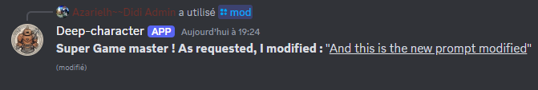
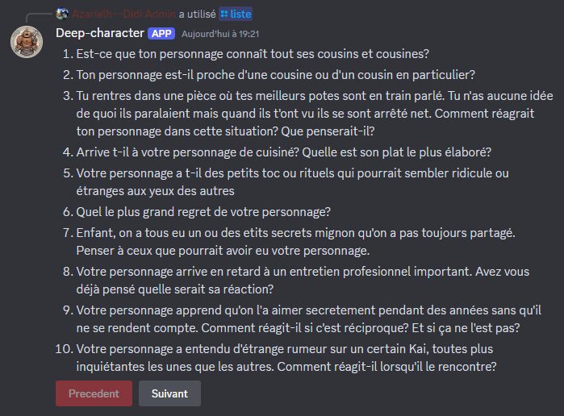

Mes Projets
Deep-Character
Deep-Character est un bot discord dédié à un forum de jeu de rôle. Concrètement, sur commande, le bot va chercher aléatoirement un prompt sur un fichier json et la poste dans le salon. On peut ajouter des prompts directement depuis discord, afficher une liste dynamique avec des boutons qui permettent de naviguer dans les pages et modifier les prompts afin d'en corriger les erreurs.
Ajouter un nouveau prompt

Modifier un prompt éxistant
Afficher une liste
Lab Tumo
Tumo est un centre de création numérique pour les 12 - 18ans pour lequel j'ai travaillé en tant que coach auprès des jeunes. Les étudiants alternent entre auto-formation en présentiel sur le centre et des ateliers animé par des professionnels. Huit domaines y sont proposé dont la programmation. Je vous présente ici les niveaux de lab 1 et 2 que j'ai réalisé en programmation.
Lab 1
Lab 2
Projets 42
42 est une école de programmation réputée dont je viens de démarré le parcours.
Je vous partage ici le lien des projets que j'ai réalisé dans le cadre de cette formation.